Comment utiliser ce document
|
Plan de la séance 3
Le modèle cellulaire : diversité et classification du vivant
La cellule procaryote et la cellule eucaryote
L'écologie microbienne : où vivent les microorganismes ?
Les facteurs influençant la croissance microbienne dans les aliments
Effets du pH et de la température sur les microorganismes alimentaires
Les inhibiteurs microbiens naturels
Les trois catégories de microorganismes d'intérêt alimentaire
1. Le modèle cellulaire : diversité et classification du vivant
1.1 La cellule, unité de base du vivant
Le corps humain est constitué d'environ 200 types de cellules différents : cellules musculaires, sanguines, intestinales, hépatiques, nerveuses, cardiaques, et bien d'autres. Toutes proviennent, à l'origine, de cellules souches qui se différencient progressivement, c'est-à-dire qu'elles se spécialisent selon le tissu qu'elles doivent former. Une cellule musculaire n'a donc ni la même forme ni la même fonction qu'une cellule nerveuse, même si les deux proviennent du même embryon au départ.
Malgré cette immense diversité de formes et de fonctions, un principe fondamental de la biologie tient toujours : toutes les cellules — humaines, animales, végétales ou microbiennes — partagent une organisation de base commune. Elles possèdent toutes une membrane qui les délimite, un matériel génétique qui contient l'information nécessaire à leur fonctionnement, et une machinerie permettant de fabriquer des protéines. C'est cette organisation commune qui permet de comparer, comme nous le ferons dans ce cours, une bactérie microscopique à une cellule du corps humain.
1.2 Une diversité impressionnante du vivant
Avant de comparer les cellules entre elles, il est utile de prendre la mesure de la diversité du vivant à l'échelle de la planète. Les biologistes ont décrit, à ce jour, entre 1,75 et 2 millions d'espèces vivantes. Ce chiffre est réparti de façon très inégale entre les grands groupes du vivant, comme le montre le tableau suivant :
| Groupe | Espèces décrites (approx.) | Part de la biomasse totale |
|---|---|---|
| Vertébrés | 65 000 | ≈ 0,16 % |
| Plantes | 390 000 | ≈ 80 % |
| Champignons | 148 000 | ≈ 2 % |
| Insectes | 1 000 000 et plus | ≈ 0,2 % |
| Procaryotes (bactéries, archées) | 10 000 et plus décrites | ≈ 15 % |
| Total (espèces décrites) | ≈ 1,75 à 2 millions | — |
Un chiffre de ce tableau mérite une attention particulière : celui des procaryotes (bactéries et archées). Le nombre de 10 000 espèces décrites est en réalité trompeur, car il ne reflète pas la diversité réelle des microorganismes. La grande majorité des espèces microbiennes ne sont pas cultivables en laboratoire par les méthodes classiques (elles ont des besoins nutritifs ou des conditions de croissance que l'on ne sait pas encore reproduire), et demeurent donc non identifiées. Les estimations les plus courantes évaluent la diversité microbienne réelle à plusieurs millions d'espèces — loin devant tous les autres groupes du vivant réunis. Autrement dit, le monde microbien est probablement le plus diversifié de tous, mais c'est aussi celui que nous connaissons le moins bien.
Le vivant : diversité approximative des grands groupes d'espèces décrites sur Terre.
1.3 La taxonomie : classification du vivant
Pour organiser cette diversité, les biologistes utilisent la taxonomie, soit la science de la classification des êtres vivants. Le système actuellement utilisé regroupe l'ensemble du vivant en trois domaines :
Les archées — des organismes procaryotes (voir section 2), souvent associés à des milieux extrêmes (voir section 3.2).
Les bactéries — également des organismes procaryotes ; il s'agit du domaine le plus pertinent pour ce cours de microbiologie alimentaire.
Les eucaryotes — des organismes possédant un noyau vrai (voir section 2.2). Ce domaine se subdivise à son tour en quatre grands règnes : les protistes, les plantes, les animaux et les champignons (aussi appelés « fonges »).
Cette classification est hiérarchique : chaque domaine se subdivise en règnes, chaque règne en groupes de plus en plus précis, et ainsi de suite jusqu'à l'espèce. Le règne animal, par exemple, se subdivise en groupes familiers — nématodes (vers ronds), mollusques, arthropodes, poissons, amphibiens, reptiles, oiseaux, mammifères. Il en va de même, plus loin dans le cours, pour les bactéries : chaque espèce bactérienne (comme Escherichia coli ou Listeria monocytogenes) occupe une place précise dans cette classification, avec un genre, une famille, un ordre, et ainsi de suite. Retenir ce principe hiérarchique aidera à comprendre, tout au long du cours, pourquoi certains microorganismes se ressemblent beaucoup (même genre) alors que d'autres n'ont en commun que d'être des bactéries.
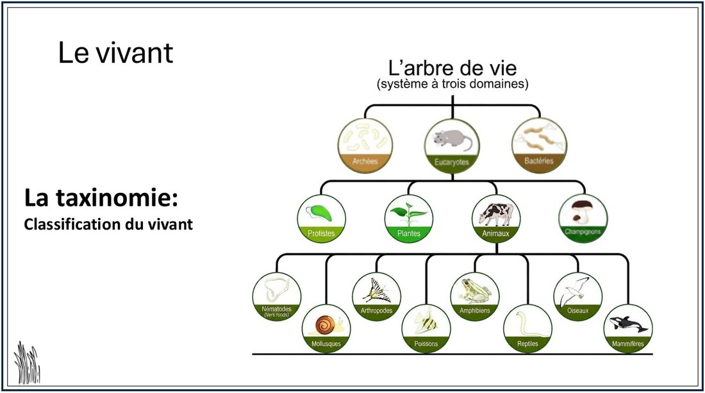
L'arbre de vie : les trois domaines (Bactéries, Archées, Eucaryotes) et leurs subdivisions.
À retenir — le modèle cellulaire et sa diversité
|
2. La cellule procaryote et la cellule eucaryote
Maintenant que les trois domaines du vivant ont été présentés, il est temps de s'attarder sur la distinction la plus importante de ce cours : celle qui oppose la cellule procaryote à la cellule eucaryote. Cette distinction structure toute la suite du cours, car la cellule procaryote — en particulier la cellule bactérienne — sera étudiée en profondeur au cours 4.
2.1 La cellule procaryote (bactéries et archées)
Le mot « procaryote » vient du grec pro (« avant ») et karyon (« noyau ») — littéralement, « avant qu'elles aient un noyau ». Ce nom décrit bien la caractéristique la plus importante de ce type de cellule : l'ADN n'y est pas enfermé dans un noyau. Il se trouve plutôt condensé et regroupé dans une région du cytoplasme appelée le nucléoïde — une zone qui n'est délimitée par aucune membrane, contrairement à un vrai noyau.
Les cellules procaryotes sont également beaucoup plus petites que les cellules eucaryotes : leur taille varie généralement entre 1 et 5 micromètres (µm), soit environ 20 à 50 fois plus petit que l'épaisseur d'un cheveu humain. Une autre caractéristique essentielle : les cellules procaryotes forment exclusivement des organismes unicellulaires autonomes — il n'existe, dans la nature, aucun organisme procaryote multicellulaire. Chaque bactérie ou chaque archée est donc, à elle seule, un organisme complet et fonctionnel.
Une bactérie typique possède plusieurs structures qui seront détaillées au cours 4 : des fimbriae (petits filaments d'ancrage), le nucléoïde (où se trouve le chromosome), des ribosomes (pour fabriquer les protéines), une membrane plasmique, une paroi cellulaire, parfois un glycocalyx (couche protectrice externe) et parfois des flagelles (pour se déplacer). Retenons pour l'instant que les Bactéries et les Archées regroupent, à elles deux, la totalité des organismes de type procaryote.
2.2 La cellule eucaryote
À l'inverse, le mot « eucaryote » vient de eu (« vrai ») et karyon (« noyau ») : ces cellules possèdent un vrai noyau. Leur ADN, organisé en chromosomes, est protégé à l'intérieur d'une enveloppe nucléaire qui isole le matériel génétique du reste de la cellule. En plus du noyau, la cellule eucaryote contient plusieurs organites membranaires — de petites structures spécialisées, chacune entourée de sa propre membrane, comme les mitochondries (production d'énergie), le réticulum endoplasmique et l'appareil de Golgi (fabrication et transport de molécules).
La cellule eucaryote est aussi nettement plus grande que la cellule procaryote : sa taille varie généralement entre 10 et 100 µm, soit un ordre de grandeur (environ 10 fois) plus gros. Les quatre règnes eucaryotes déjà présentés (animaux, plantes, champignons, protistes) se distinguent aussi par leur organisation : les protistes sont essentiellement unicellulaires, alors que les animaux, les champignons et les plantes sont majoritairement multicellulaires. Il faut toutefois garder en tête une nuance importante : certains champignons, comme les levures, sont en réalité unicellulaires malgré leur appartenance au règne des champignons — un point qui sera repris aux cours 5 et 6.
Une cellule eucaryote typique, prenons l'exemple d'un mycète (champignon), présente les structures suivantes : un flagelle (parfois), un réticulum endoplasmique, une enveloppe nucléaire et un nucléole à l'intérieur du noyau, une membrane plasmique, des ribosomes, un appareil de Golgi et des mitochondries.
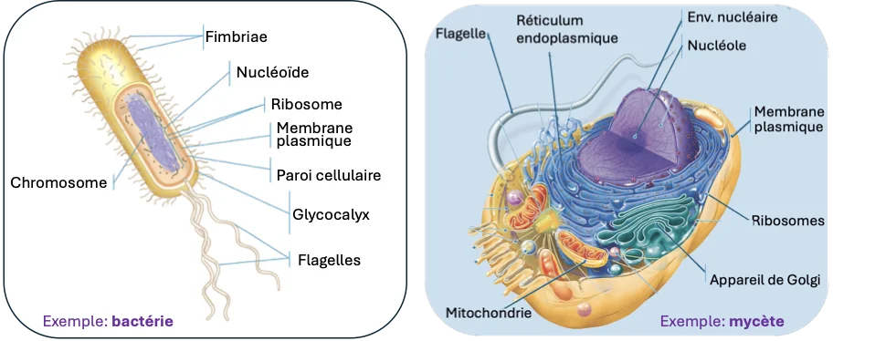
Comparaison structurale entre une cellule procaryote (exemple : bactérie) et une cellule eucaryote (exemple : mycète).
2.3 Tableau comparatif
| Caractéristique | Cellule procaryote | Cellule eucaryote |
|---|---|---|
| Exemples | Bactérie, archée | Mycète, cellule animale, cellule végétale, protiste |
| Noyau | Absent — ADN dans le nucléoïde | Présent — entouré d'une enveloppe nucléaire |
| Taille approximative | ≈ 1 à 5 µm | ≈ 10 à 100 µm |
| Organites membranaires | Absents | Présents (mitochondries, réticulum endoplasmique, Golgi...) |
| Organisation | Unicellulaire exclusivement | Unicellulaire (protistes) ou multicellulaire (animaux, plantes, fonges) |
| Domaines / règnes | Bactéries, Archées | Protistes, Plantes, Animaux, Champignons |
À retenir — procaryote vs eucaryote
|
||
3. L'écologie microbienne : où vivent les microorganismes ?
Après avoir comparé les cellules entre elles, tournons-nous vers une question plus écologique : où, exactement, les microorganismes vivent-ils ? La réponse courte est : à peu près partout. L'étude des milieux dans lesquels vivent les microorganismes, de leurs interactions avec leur environnement et avec les autres êtres vivants s'appelle l'écologie microbienne.
3.1 Une diversité de milieux insoupçonnée
Les microorganismes occupent une variété de milieux qui dépasse largement l'intuition. Même des milieux d'apparence tout à fait anodine — un peu d'eau douce stagnante, de la matière végétale en décomposition dans une forêt — abritent déjà, à l'échelle microscopique, une grande diversité d'organismes : algues, protistes, bactéries et champignons microscopiques y cohabitent en abondance. Cette omniprésence des microorganismes est justement ce qui rend la microbiologie alimentaire nécessaire : partout où se trouve un aliment, des microorganismes environnants ont la possibilité de s'y installer.
3.2 Les extrêmophiles
Certains microorganismes — surtout des archées, mais aussi certaines bactéries — non seulement tolèrent, mais nécessitent des conditions environnementales extrêmes pour survivre. On les appelle des extrêmophiles (littéralement, « qui aiment l'extrême »). On les classe selon le facteur environnemental auquel ils sont adaptés :
| Facteur | Catégorie | Tolérance | Exemple |
|---|---|---|---|
| Température (chaud) | Thermophiles / hyperthermophiles | > 80 °C, jusqu'à ≈ 121 °C près des sources hydrothermales | Pyrolobus fumarii |
| Température (froid) | Psychrophiles | < 15 °C, jusqu'à environ -20 °C | Bactéries des glaces polaires |
| pH (acide) | Acidophiles | pH 0-3 | Picrophilus oshimae |
| pH (alcalin) | Alcaliphiles | pH 9-12 | Bacillus alkalophilus |
| Salinité | Halophiles (extrêmes) | 20-30 % NaCl (mer Morte, marais salants) | Haloquadratum walsbyi |
| Pression | Piézophiles / barophiles | > 10 MPa, fosses océaniques | Moritella yayanosii |
| Dessiccation | Xérophiles | Résistance à une très faible activité de l'eau (aw < 0,6) | Deinococcus radiodurans, lichens |
| Radiations | Radiorésistants | Survivent à de fortes doses de radiations (jusqu'à ≈ 15 000 Gray) | Deinococcus radiodurans |
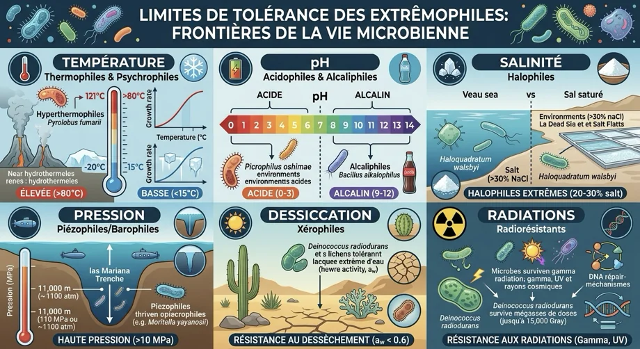
Les extrêmophiles : limites de tolérance selon la température, le pH, la salinité, la pression, la dessiccation et les radiations.
Ce sujet peut sembler très éloigné de la cuisine ou de la salle de transformation alimentaire, mais il a un lien direct avec ce cours : plusieurs microorganismes d'intérêt en contrôle de la qualité ne sont pas des extrêmophiles au sens strict, mais partagent tout de même une tolérance qui complique leur élimination. C'est le cas des psychrotrophes — des microorganismes comme Listeria monocytogenes ou Pseudomonas, capables de croître (lentement, mais sûrement) même à la température du réfrigérateur. Ce lien sera repris en détail aux cours 7 et 8, dans le contexte des organismes indicateurs et des normes de conservation au froid.
3.3 Combien de cellules dans notre corps ?
Le corps humain lui-même est un excellent exemple d'écosystème microbien. On estime qu'il contient environ 36 milliards de cellules humaines. Or, il abrite en même temps environ 40 000 milliards de cellules bactériennes — c'est-à-dire, selon cette estimation, environ 1000 fois plus de bactéries que de cellules humaines. (Certaines estimations plus récentes en science donnent un ratio plus proche de 1 pour 1 ; l'ordre de grandeur exact varie selon les méthodes de comptage, mais le message pédagogique demeure le même : notre corps héberge une quantité colossale de microorganismes.) Ce chiffre impressionnant illustre à quel point le corps humain est, en nombre de cellules, davantage « microbien » qu'« humain ».
3.4 Le microbiote humain
L'ensemble des microorganismes qui colonisent naturellement le corps humain porte un nom : le microbiote. Il se répartit en plusieurs sites principaux :
Le microbiote buccal
Les voies respiratoires
Le microbiote cutané (la peau)
L'appareil digestif — de loin le site le plus riche : environ 95 % de la biomasse microbienne totale du corps humain s'y trouve.
Le système urogénital
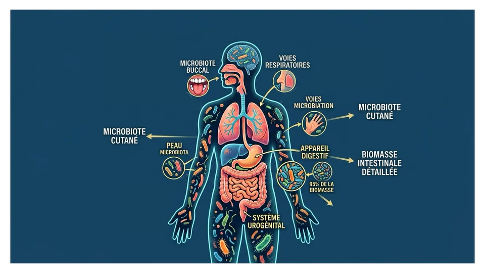
Les principaux sites du microbiote humain.
3.5 Pourquoi les microorganismes vivent-ils dans notre corps ?
Cette question mérite qu'on s'y attarde, car elle introduit un principe qui reviendra constamment dans ce cours : les microorganismes s'installent là où les conditions leur conviennent. Le corps humain offre un écosystème chaud, humide et riche en nutriments — pratiquement idéal pour la survie et la reproduction microbienne. En détail :
Une température « juste parfaite » (≈ 37 °C) — ni trop froide ni trop chaude, comparée aux environnements extrêmes qu'affectionnent les extrêmophiles (volcan, glacier).
Un buffet de nutriments — sucres, protéines, vitamines : ce que nous mangeons nourrit du même coup notre microbiote.
Une oasis de sel — juste assez de sel pour permettre la vie microbienne, sans excès inhibiteur.
Pas de pression extrême — une pression atmosphérique normale (1 atm), un environnement confortable.
De l'eau à volonté — l'intestin, en particulier, est un milieu riche en eau, essentielle à la croissance microbienne.
Un abri idéal — une protection contre le froid et les agressions extérieures.
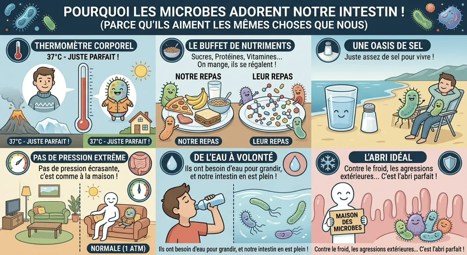
Pourquoi les microbes adorent notre intestin : les six raisons présentées ci-dessus, résumées visuellement.
3.6 Un principe général à retenir
Ce principe — les microorganismes prospèrent là où les conditions leur conviennent — ne s'applique pas seulement au corps humain. Il s'applique à tous les microorganismes, y compris dans les aliments : leur présence, leur survie et leur croissance dépendent directement des conditions du milieu dans lequel ils se trouvent. C'est exactement ce principe qui structure la section suivante, où nous verrons quels facteurs précis déterminent si un microorganisme peut ou non se développer dans un aliment donné.
À retenir — l'écologie microbienne
|
4. Les facteurs influençant la croissance microbienne dans les aliments
Le principe dégagé à la fin de la section précédente — les microorganismes se développent là où les conditions leur conviennent — s'applique très concrètement aux aliments. On distingue deux grandes catégories de facteurs qui déterminent si, et à quelle vitesse, un microorganisme peut se développer dans un aliment donné : les facteurs intrinsèques et les facteurs extrinsèques.
4.1 Facteurs intrinsèques (propres au microorganisme)
Les facteurs intrinsèques sont ceux qui dépendent du microorganisme lui-même — de sa biologie propre — plutôt que de son environnement. Ils incluent notamment :
L'espèce ou la souche en cause.
Le patrimoine génétique (la lignée, le chromosome) du microorganisme.
Les besoins nutritifs et la température optimale de croissance, qui varient selon l'espèce.
Le pH optimal de croissance — pertinent notamment pour la production dirigée de ferments (levures, lactobacilles).
La tolérance à l'activité de l'eau et les besoins en oxygène (aérobie, anaérobie, anaérobie facultatif).
La capacité métabolique (fermentation ou respiration).
La résistance aux conditions défavorables propre à chaque espèce.
La production de structures ou de toxines (spores, enzymes).
4.2 Facteurs extrinsèques (conditions environnementales)
À l'opposé, les facteurs extrinsèques sont ceux qui dépendent de l'environnement dans lequel se trouve le microorganisme — c'est-à-dire, dans notre cas, les conditions de l'aliment et de son entreposage :
La température (contrôle thermique du procédé).
Le pH de l'environnement.
La disponibilité en oxygène et l'humidité (activité de l'eau).
La pression osmotique (concentration en sel ou en sucre, emballage semi-perméable).
La présence de substances antimicrobiennes et l'exposition à la lumière ou aux rayonnements.
Les interactions avec d'autres microorganismes (compétition, antagonisme).
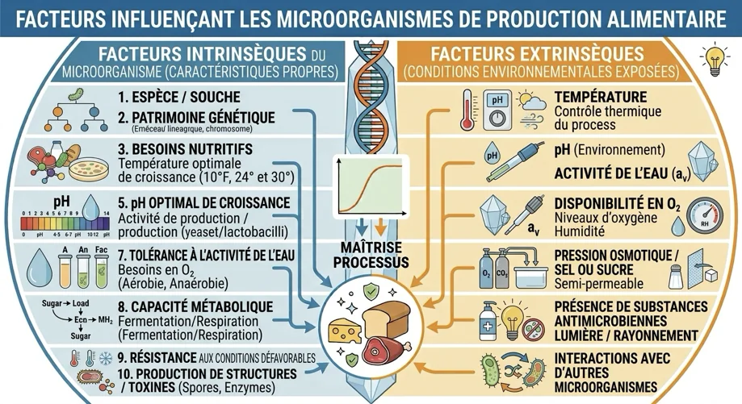
Les facteurs intrinsèques (propres au microorganisme) et extrinsèques (liés à l'environnement) influençant la croissance microbienne.
Cette distinction est loin d'être théorique : c'est précisément en jouant sur les facteurs extrinsèques que l'industrie alimentaire contrôle la croissance microbienne dans ses procédés de fabrication. Abaisser le pH, contrôler la température, réduire l'activité de l'eau, ajuster l'atmosphère d'emballage ou ajouter des additifs permet d'orienter la croissance microbienne dans le sens souhaité : favoriser les ferments utiles (par exemple pour fabriquer un fromage ou un pain), tout en freinant les pathogènes et les organismes d'altération. On appelle cela la maîtrise du procédé.
À retenir — facteurs de croissance microbienne
|
5. Effets du pH et de la température sur les microorganismes alimentaires
Parmi tous les facteurs extrinsèques présentés à la section précédente, deux sont si importants en microbiologie alimentaire qu'ils méritent une section complète : le pH et la température. Ce sont les deux leviers les plus utilisés, en industrie comme à la maison, pour contrôler la croissance microbienne dans les aliments.
5.1 Effet du pH sur les microorganismes alimentaires
Le pH d'un aliment détermine dans quelle mesure les microorganismes peuvent y croître. De façon générale, plus un aliment est acide (pH bas), plus la croissance microbienne y est ralentie ou empêchée ; à l'inverse, un aliment neutre (pH près de 7) offre des conditions optimales à la plupart des pathogènes.
| Zone de pH | Effet sur les microorganismes | Exemples d'aliments |
|---|---|---|
| ≈ 7 (neutre) | Croissance optimale des pathogènes (E. coli, Salmonella, Listeria, moisissures communes) — vitesse de croissance maximale | Haricot vert, choux, laitue, pomme de terre, carotte, oignon |
| ≈ 5,3-6,2 | Ralentissement de la croissance — début d'inhibition | Poisson, lait frais, beurre, bœuf (selon l'abattage) |
| ≈ 4-5 | Action antimicrobienne accrue — favorise les ferments lactiques et les levures | Banane, tomate, orange, raisin |
| ≈ 4 | Inhibition forte des bactéries d'altération, favorise ferments lactiques et levures | Camembert, yaourt, olive |
| ≈ 2-3 | Stérilisation relative — arrêt quasi complet de la croissance, stabilité microbiologique | Rhubarbe, pomme, pamplemousse, citron |
| Très bas (conserves) | Destruction microbienne extrême — effet lytique et dénaturation des protéines | Conserves acidifiées |
5.2 Effet de la température sur les microorganismes alimentaires
La température agit de façon très semblable, mais dans les deux directions à la fois : autant le froid que la chaleur peuvent ralentir ou détruire les microorganismes, tandis qu'une zone de température intermédiaire favorise au contraire leur croissance rapide.
| Plage de température | Zone | Effet |
|---|---|---|
| ≥ 70 °C | Désinfection thermique | Destruction des pathogènes — vitesse de mortalité maximale |
| 60-70 °C | Maintien au chaud minimal | Buffets chauds, sauces maintenues à température sécuritaire |
| ≈ 40 °C | Zone de danger — croissance optimale mésophile | Conditions optimales pour Bacillus cereus et la plupart des mésophiles |
| ≈ 30 °C | Croissance active | Cuisine ambiante, préparation |
| 5-10 °C | Ralentissement de la croissance | Mésophiles et psychrotrophes ralentis |
| 0-2 °C | Réfrigération adéquate | Inhibition forte de la plupart des microorganismes (certaines levures/moisissures tolérantes au froid restent actives) |
| ≈ -10 °C | Congélation adéquate | Arrêt complet de la croissance microbienne |
| ≈ -20 °C | Surgélation / entreposage longue durée | Dommages aux cellules microbiennes ; conservation très longue durée |
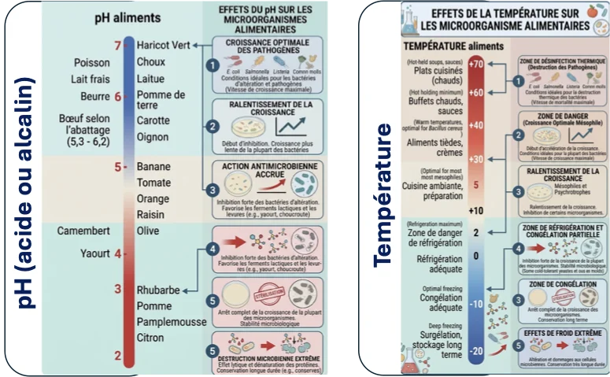
Effets du pH (à gauche) et de la température (à droite) sur les microorganismes alimentaires.
Rappel HACCP : la zone comprise approximativement entre 4 °C et 60 °C est la fameuse « zone de danger », soit la plage de température où la majorité des microorganismes d'intérêt alimentaire se multiplient le plus rapidement. Ce rappel sera directement réutilisé aux cours 7 et 8 pour expliquer certaines non-conformités liées à un refroidissement trop lent (par exemple avec Clostridium perfringens ou Bacillus cereus).
5.3 Tableau détaillé — tolérance au pH et à la température des principaux microorganismes alimentaires
Le tableau suivant réunit, pour les microorganismes les plus souvent rencontrés en microbiologie alimentaire, leurs plages de tolérance au pH et à la température. Il servira de référence pour les cours 7 et 8, où ces mêmes microorganismes seront classés selon leur importance pour la salubrité alimentaire.
| Microorganisme / groupe | Tolérance au pH | Activité selon la température (°C) | Type physiologique | Température de destruction thermique (°C) | ||||||
|---|---|---|---|---|---|---|---|---|---|---|
| pH min. | pH opt. | pH max. | 0-10 froid | 10-20 frais | 20-37 modérée | 37-45 chaud | > 45 élevée | |||
Bactéries lactiques | 3,0 | 5,0–6,5 | 8–9 | ± | + | + | Surviejusqu’à ≈ 46 °C | − | Mésophilecertaines souches tolèrent le froid | > 60-70 °C (30 min) 80-90 °C (2 s) |
Bactéries acétiques | 3,0 | 5,0–6,5 | 9,0 | ± | + | + | Fortejusqu’à ≈ 40 °C | Faible | Mésophile | > 60-70 °C (30 min) |
Pseudomonas | ≈5,0–5,5 | 6,0–7,0 | ≈8,0 | + | + | + | ± | − | Psychrotrophecroît au réfrigérateur | > 60-70 °C (durée courte) |
Entérobactéries | ≈4,5–5,5 | 6,0–7,5 | ≈9,0 | ± | + | + | Fortejusqu’à ≈ 44 °C | − | Mésophile | > 60-70 °C (variable) |
Salmonella | ≈4,0–4,5 | 6,5–7,2 | ≈9,0 | ± | + | + | Fortejusqu’à ≈ 44 °C | − | Mésophilesurvit au froid sans y croître | > 70 °C (2 min) |
E. coli | ≈4,0–4,5 | 6,0–7,0 | ≈9,0 | ± | + | + | ± | − | Mésophilesurvit au froid sans y croître | > 70 °C (2 min, y compris EHEC) |
Staphylococcus aureus | ≈4,0–4,5 | 6,0–7,0 | 9,5–10,0 | ± | + | + | ± | − | Mésophile | > 60-70 °C (cellules) entérotoxine thermostable |
Listeria monocytogenes | ≈4,6 | 6,0–7,0 | ≈9,5 | + | + | + | ± | − | Psychrotrophecroît au réfrigérateur | > 70 °C (2 min) ou 65 °C (15 min) |
Clostridium botulinum | ≈4,6 | 6,0–7,0 | ≈8,5–9,0 | − | ± | + | + | − | Mésophilecroissance inhibée sous pH 4,6 | toxine : > 80 °C spores : > 121 °C (15 min, sous pression) |
Clostridium perfringens | ≈5,0–5,5 | 6,0–7,5 | ≈8,0–9,0 | ± | + | + | + | Faiblejusqu’à ≈ 50 °C | Mésophileoptimum élevé (≈ 43-47 °C) | > 60 °C (formes végétatives) spores résistantes |
Bacillus cereus | ≈4,5–5,0 | 6,0–7,0 | ≈8,5–9,0 | ± | + | + | + | − | Mésophile | > 60 °C (formes végétatives) spores résistantes |
Levures | 1,5–3,0 | 4,0–6,0 | ≈8,0 | + | + | + | + | Certaines | Mésophilecertaines espèces sont psychrotrophes | > 60-75 °C (variable) |
Moisissures | 1,5–5,5 | 4,5–6,8 | 8,0–11,0 | + | + | + | + | Certaines | Mésophilecertaines espèces tolèrent le froid, d’autres la chaleur (≈ 42-45 °C) | > 60-80 °C (spores plus résistantes) |
À retenir — pH et température
|
6. Les inhibiteurs microbiens naturels
Au-delà du pH et de la température, certains aliments possèdent une défense chimique intégrée : ils contiennent naturellement des substances qui limitent la croissance microbienne, sans qu'aucun traitement ni additif n'ait été nécessaire. Ces substances, appelées inhibiteurs microbiens naturels, proviennent aussi bien du règne animal que du règne végétal.
6.1 Origine animale
Blanc de l'œuf — avidine, conalbumine, inhibiteurs d'enzymes (ovomucoïdes et ovo-inhibiteurs), lysozyme.
Produits laitiers — acides gras, immunoglobulines, lactenines, lactoferrine, leucocytes, lysozyme.
Tissus animaux — hormones, composés issus des organes.
6.2 Origine végétale
Le règne végétal est particulièrement riche en composés antimicrobiens naturels, notamment : les acides organiques (dont les acides benzoïques), l'aldéhyde cinnamique et l'acétaldéhyde, l'allicine (ail), les anthocyanines, les composés phénoliques et les polyphénols, les composés amers (lupulone, humulone, isohumulone — présents dans le houblon), les épices, l'eugénol (clou de girofle), les extraits de plantes, les huiles essentielles, des inhibiteurs d'enzymes, le lysozyme végétal, les tannins, et la tomatine.
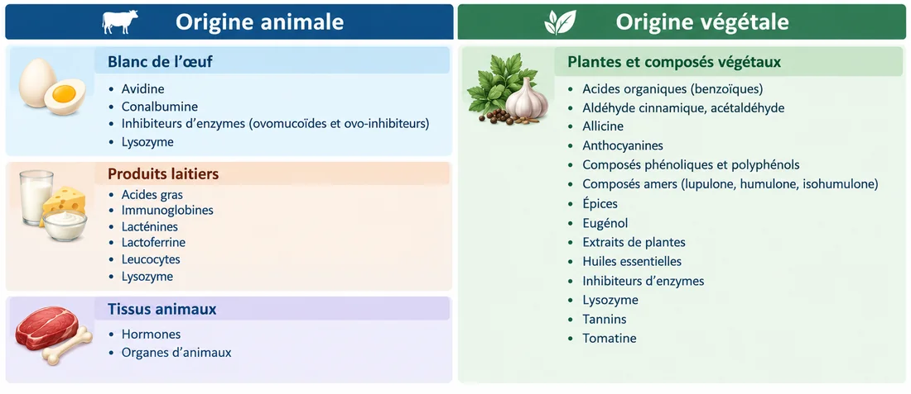
Inhibiteurs microbiens naturels d'origine animale et végétale.
Ces inhibiteurs naturels expliquent en partie pourquoi certains ingrédients traditionnels — l'ail, les épices, les produits laitiers non transformés — contribuent depuis toujours à la conservation des aliments ou inhibent certains pathogènes, bien avant l'apparition des méthodes de conservation industrielles. C'est un bon point de comparaison avec les méthodes de préservation modernes et le cadre réglementaire qui seront vus aux cours 7 et 8.
À retenir — inhibiteurs microbiens naturels
|
7. Les trois catégories de microorganismes d'intérêt alimentaire
Cette dernière section rassemble tout ce qui a été vu jusqu'ici (cellule, écologie, facteurs de croissance, pH, température, inhibiteurs) en proposant un cadre de classification essentiel pour la suite du cours : selon leur effet sur l'aliment et sur la santé, on classe les microorganismes alimentaires en trois catégories.
7.1 Pathogènes
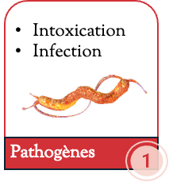
Les microorganismes pathogènes causent une intoxication ou une infection. Ils peuvent provoquer des intoxications ou des infections alimentaires graves, des troubles digestifs sévères, voire des complications mortelles chez les personnes vulnérables — personnes âgées, femmes enceintes, jeunes enfants, personnes immunodéficientes. Ce sont eux qui font l'objet des principales préoccupations de salubrité alimentaire, et ils seront étudiés en détail aux cours 7 et 8.
7.2 D'altération
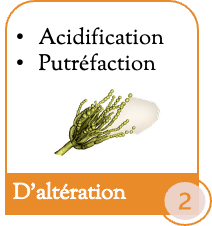
Les microorganismes d'altération provoquent l'acidification ou la putréfaction de l'aliment. Ils détériorent ses qualités organoleptiques — goût, odeur, couleur, texture, aspect visuel — mais, règle générale, ils ne représentent pas de risque pour la santé. C'est une nuance essentielle à retenir : un aliment « gâté » (altéré) n'est pas nécessairement un aliment « dangereux » (contaminé par un pathogène), même si, dans les deux cas, l'aliment finit par ne plus être consommable ou souhaitable.
7.3 Utiles
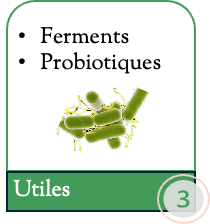
Enfin, les microorganismes utiles regroupent les ferments et les probiotiques. Ils permettent de transformer et de conserver les aliments par fermentation, et de développer leurs qualités gustatives, nutritionnelles et de texture — pensons aux fromages, aux pains, aux yaourts et aux bières, tous rendus possibles grâce à l'action de microorganismes soigneusement sélectionnés.
7.4 Tableau récapitulatif
| Microorganisme / groupe | Catégorie | Caractéristiques clés | Aliments associés et rôles (production / altération) |
|---|---|---|---|
Bactéries lactiques | U | Mésophiles ; fermentent les sucres en acide lactique | Yaourts, fromages (affinage), charcuteries, légumes lacto-fermentés (choucroute) ; fermentation contrôlée |
Bactéries acétiques | U | Mésophiles, aérobies ; oxydent l’éthanol en acide acétique | Vinaigre (fermentation), kombucha ; altération des boissons alcoolisées ; nécessitent de l’oxygène |
Pseudomonas | A | Psychrotrophes ; altération de surface rapide | Viandes, poissons, produits laitiers, légumes frais stockés au froid ; conditions de réfrigération |
Entérobactéries | AP | Mésophiles ; indicateur d’hygiène générale | Viandes, volailles, œufs, produits laitiers non pasteurisés, végétaux crus ; conditions tièdes, défaut d’hygiène |
Salmonella | P | Pathogène ; entérobactérie pathogène | Volailles, œufs et dérivés (mayonnaise maison, crèmes), viandes hachées ; températures douces |
E. coli | P | Pathogène ; sérotypes EHEC | Viandes hachées, lait cru et produits au lait cru ; contamination fécale ; températures douces |
Staphylococcus aureus | P | Pathogène ; entérotoxine thermostable | Produits crémeux, salades mixtes, charcuteries ; manipulations humaines ; température ambiante |
Listeria monocytogenes | P | Pathogène ; croît sous réfrigération | Charcuteries, poissons fumés, fromages à pâte molle au lait cru, aliments prêts à consommer |
Clostridium botulinum | P | Pathogène ; anaérobie stricte, sporulée ; toxine botulique | Conserves mal thermisées (familiales ou industrielles), aliments sous vide, herbes dans l’huile, miel (nourrissons) |
Clostridium perfringens | P | Pathogène ; sporulée ; toxine produite après ingestion | Plats de viande en sauce, ragoûts refroidis trop lentement (formes végétatives réactivées) |
Bacillus cereus | P | Pathogène ; sporulée ; toxine émétique (thermostable) ou diarrhéique (thermolabile) | Riz et pâtes cuits, épices, plats cuisinés refroidis trop lentement ; toxines produites après la cuisson |
Levures | U | Mésophiles ; fermentation alcoolique ou production de biomasse | Bière, vin, pain (levain), yaourts aux fruits |
Moisissures | UA | Aérobies, tolérantes au froid ; affinage (U) ou mycotoxines (A) | Fromages bleus (affinage) ; fruits, légumes et pain (altération visible), environnements humides |
7.5 Complément historique : la pénicilline
Le saviez-vous ? Fleming et la découverte de la pénicilline En 1928, Alexander Fleming observe qu'une moisissure du genre Penicillium ayant contaminé accidentellement une boîte de culture inhibe la croissance des bactéries environnantes — la découverte fondatrice des antibiotiques modernes (la pénicilline). Cet épisode illustre à merveille un principe clé de l'écologie microbienne : certains microorganismes produisent naturellement des substances qui protègent contre d'autres microorganismes — un phénomène appelé antibiose, directement apparenté aux inhibiteurs naturels vus à la section 6, et qui sera repris au cours 8 dans le contexte des méthodes de contrôle de la qualité. |
À retenir — les trois catégories de microorganismes alimentaires
|
Résumé général de la séance 3
Cette troisième séance a permis de faire le pont entre le cours 2 (les molécules du vivant) et le cours 4 (la structure détaillée de la cellule bactérienne), en explorant le modèle cellulaire, l'écologie microbienne et les facteurs qui gouvernent la croissance des microorganismes dans les aliments.
Toutes les cellules du vivant partagent une organisation de base commune, malgré une diversité impressionnante d'espèces (1,75 à 2 millions décrites, mais probablement plusieurs millions chez les seuls microorganismes).
L'arbre de vie regroupe le vivant en trois domaines : Archées, Bactéries et Eucaryotes (ce dernier se divisant en protistes, plantes, animaux et champignons).
La cellule procaryote (bactéries, archées) n'a pas de noyau vrai, est petite (1-5 µm) et toujours unicellulaire ; la cellule eucaryote a un noyau vrai, des organites membranaires, et est plus grande (10-100 µm).
Les microorganismes occupent une diversité de milieux insoupçonnée, y compris des milieux extrêmes (extrêmophiles) ; le corps humain lui-même héberge un microbiote considérable, surtout intestinal.
La croissance microbienne dans les aliments dépend de facteurs intrinsèques (propres au microorganisme) et extrinsèques (liés à l'environnement, notamment le pH et la température).
Le pH et la température ont des effets marqués et bien documentés sur la croissance, le ralentissement, l'inhibition et la destruction des microorganismes alimentaires — avec une « zone de danger » thermique entre 4 °C et 60 °C.
Certains aliments contiennent naturellement des inhibiteurs microbiens, d'origine animale ou végétale.
On distingue trois catégories de microorganismes d'intérêt alimentaire : pathogènes, d'altération et utiles.
Pour la suite du cours Le cours 4 approfondira la cellule procaryote en détail : sa paroi cellulaire (Gram positif vs Gram négatif), ses structures facultatives, ainsi que les mécanismes de reproduction et de croissance bactérienne. Les catégories de microorganismes et les effets du pH et de la température introduits ici seront quant à eux repris et approfondis dans un cadre réglementaire aux cours 7 et 8 (normes MAPAQ, organismes indicateurs). |